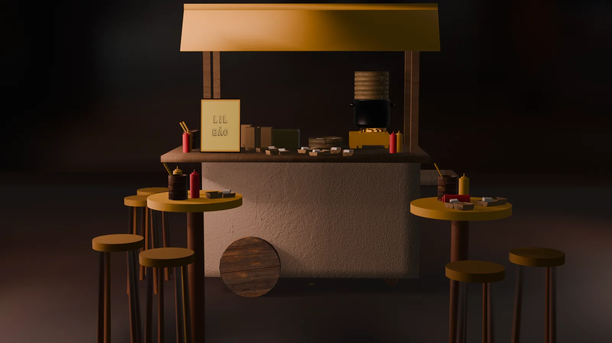
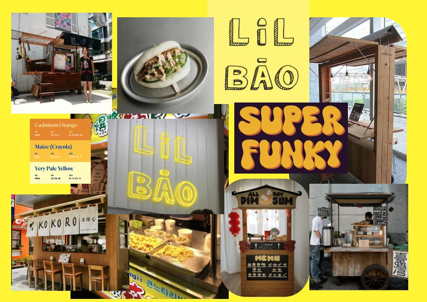
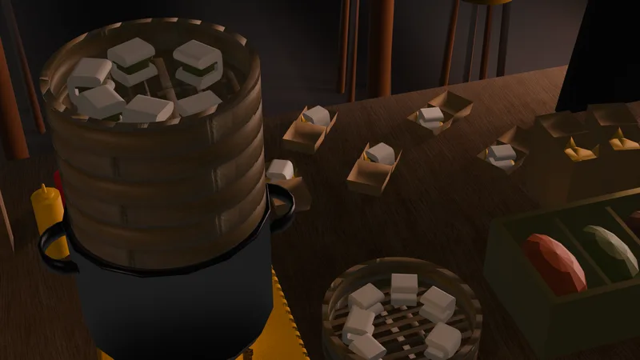
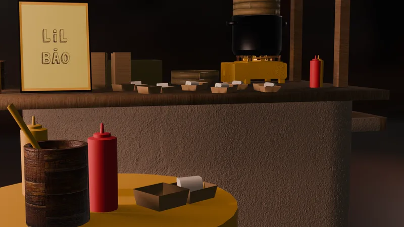
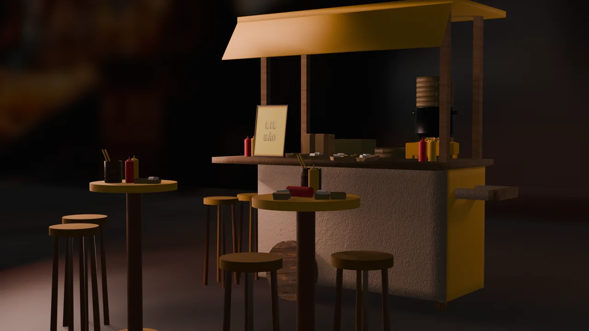

3D · Blender · School project · 2026
Lil Bāo
A cosy night-time bao stall, modelled, textured and lit in Blender.

- Role
- Concept, 3D modelling, texturing & lighting
- Tools
- Blender, Figma (moodboard)
- Duration
- 3 weeks
- Team
- Solo · 2nd-year school assignment
01 Problem
For a second-year school assignment I built a complete 3D scene in Blender, from first shapes to final render. I designed a little street-food stall selling bao and wanted it to feel warm and inviting at night, like a place you would stop on the way home.
02 Process
-

Moodboard
I collected street-food stalls, neon signs and bao, then picked a warm palette of orange and yellow and drew the playful "Lil Bāo" lettering. Reference photos are by other people; the lettering is mine.
-

Modelling the stall
I modelled the cart, awning, tables and stools, then filled the counter with small props: steamers full of bao, paper trays, sauce bottles and chopstick holders, so the stall looks like it is open for business.
-

Materials and lighting
Wood, plaster and cardboard textures hold up in close-ups, and warm, low lighting against a dark background keeps all the attention on the stall.
03 Outcome
The final renders show Lil Bāo from several angles, ready for its first customer.
